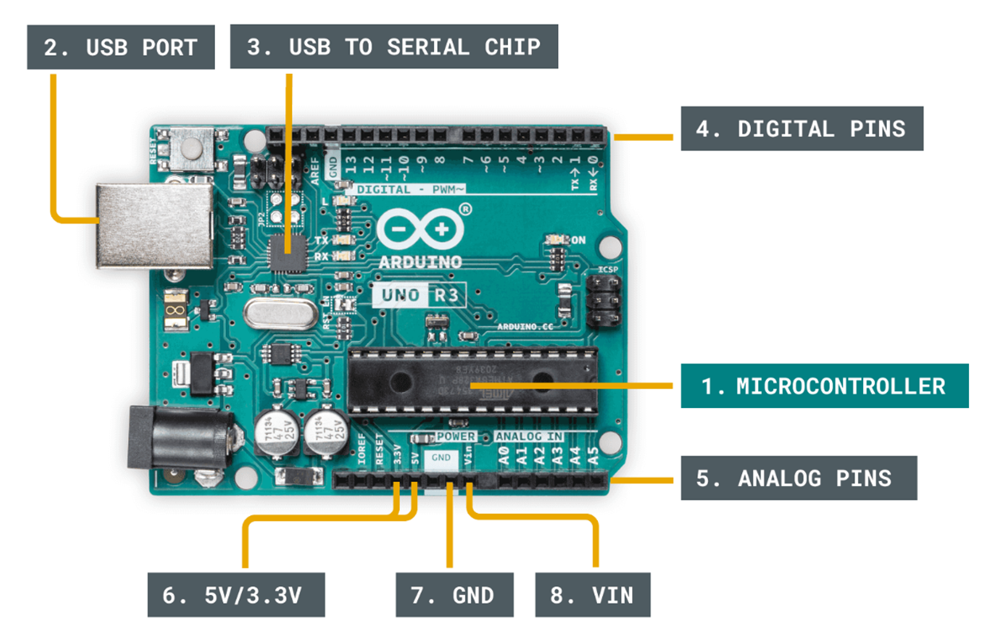
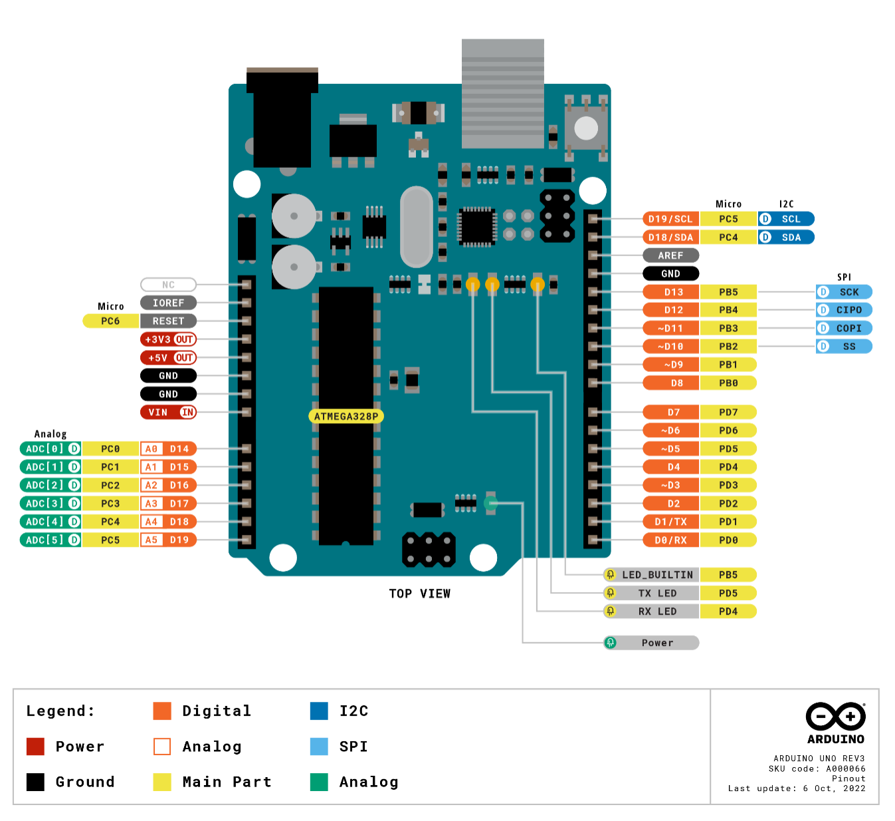
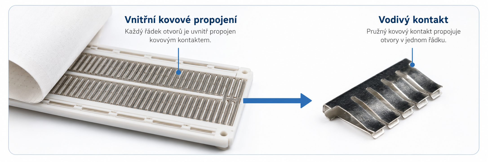
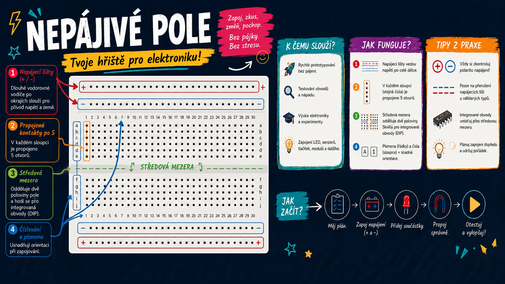

Praxe – Arduino | 3. ročník
Arduino je platforma pro výuku a vývoj elektronických projektů. Z hardwarového pohledu jde o desku s mikrokontrolérem, ke které lze připojit senzory, motory, světla, displeje a další komponenty. Tyto komponenty potom ovládáme pomocí programu vytvořeného v jazyce C++.
Arduino je vhodné pro začátečníky i pokročilé. Používá se například v domácí automatizaci, měření, robotice nebo při tvorbě vlastních zařízení.
Existuje mnoho typů Arduino desek. Liší se výkonem, počtem pinů, pamětí a možnostmi komunikace, například přes WiFi nebo Bluetooth. V hodinách budeme používat především Arduino UNO s mikrokontrolérem ATmega 328.


Slovo embedded označuje systém, který je součástí určitého zařízení. Mikrokontrolér v ledničce, automobilu nebo robotu vykonává konkrétní úkol podle programu, který je v něm uložen.
Senzory, tlačítka, komunikace a naměřené hodnoty.
Arduino čte vstupy, vyhodnocuje podmínky a rozhoduje.
LED, displej, motor, relé, bzučák nebo jiné zařízení.
Program pro Arduino obsahuje dvě základní funkce: setup() a loop().
// Sem patří knihovny, konstanty a proměnné.
void setup() {
// Kód v této funkci se provede pouze jednou po spuštění Arduina.
}
void loop() {
// Hlavní kód programu se stále opakuje dokola.
}Přímo na desce Arduina je jedna LED, kterou můžeme z programu ovládat. Je připojena na pin 13. Co budeme potřebovat?
Touto funkcí nastavíme pin 13, kde je připojena LEDka, jako výstup.
pinMode(13, OUTPUT);Touto funkcí přivedeme na pin 13 logickou jedničku (HIGH). Tím se na pin připojí 5 V a LEDka se rozsvítí.
digitalWrite(13, HIGH); // zapnutí LEDProtože mikroprocesor v Arduinu pracuje s frekvencí 16 MHz, tak pokud bychom jen neustále měnili stav na pinu, nebylo by blikání pro lidské oko viditelné. Proto přidáme pauzu, aby oko stihlo vnímat, že LEDka svítí.
delay(1000); // čekání po dobu jedné sekundy// sem přijde vložení knihoven, inicializace proměnných...
int led = 13;
void setup() {
// zde vložte kód, který má běžet pouze jednou
pinMode(led, OUTPUT);
}
void loop() {
// zde vložte hlavní kód, který se bude opakovat donekonečna
digitalWrite(led, HIGH); // zapnutí LED
delay(1000); // čekání po dobu jedné sekundy
digitalWrite(led, LOW); // vypnutí LED
delay(1000); // čekání po dobu jedné sekundy
}Nepájivé pole je univerzální montážní deska určená k sestavování a testování elektronických obvodů bez nutnosti pájení. Je tvořeno plastovým tělem s hustou sítí otvorů, pod nimiž jsou vodivě propojené řady a sloupce. Ty umožňují jednoduché elektrické spojení mezi vloženými vodiči a součástkami.

Struktura pole je obvykle rozdělena na dvě hlavní části:
Při zapojování externí LED je nutné použít sériový rezistor. Ten omezuje proud, který LED prochází, a chrání ji před poškozením.

Sériová linka umožňuje posílat data mezi Arduinem a počítačem. V Arduino IDE se přijaté zprávy zobrazují v nástroji Sériový monitor.
Serial.print("text"); – vypíše text do sériového monitoru.Serial.print(promenna); – vypíše hodnotu proměnné.Serial.println(); – vypíše text nebo hodnotu a přejde na nový řádek.int cislo = 5;
void setup() {
Serial.begin(9600);
}
void loop() {
Serial.print("Hodnota promenne cislo je: ");
Serial.println(cislo);
}